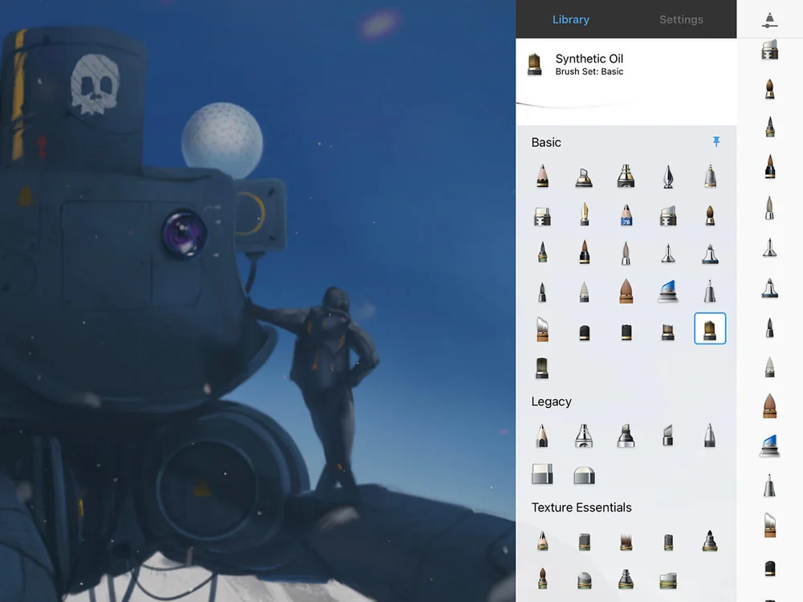
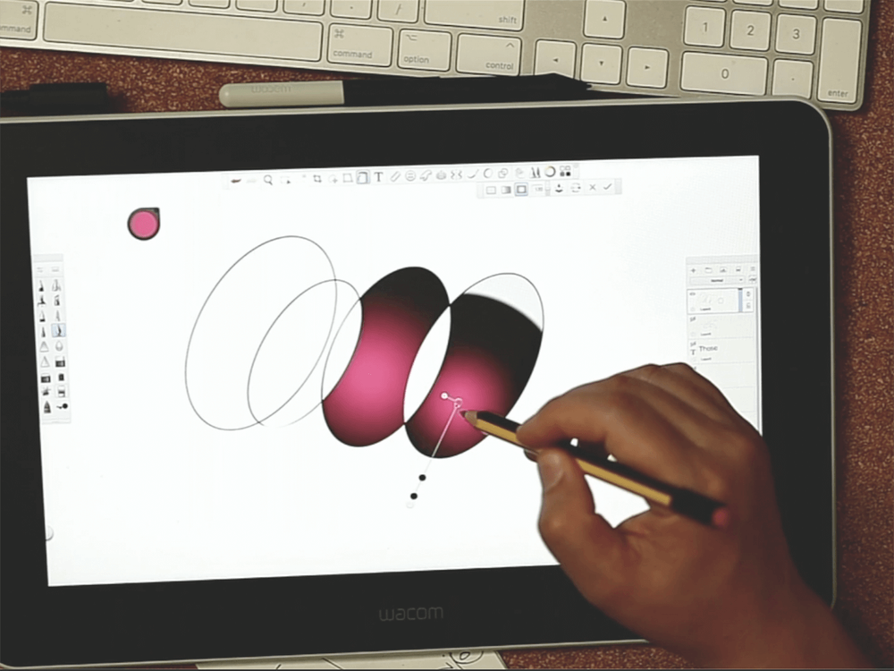

别再羡慕别人手机画画好看——Sketchbook 新手五分钟入门指南
第一次接触手机手绘？Autodesk Sketchbook 就是你需要的那款——免费、专业、从零就能上手。这篇带你从安装到画出第一张成稿，全程不讲术语。
这篇能带你从完全不会到用 Sketchbook 画出第一张像样的画——不需要任何手绘基础，也不用懂什么数位板、快捷键。
它到底是干嘛的：给手机装了一支专业画笔
你有没有过这种时候——刷到别人用手机画的插画，心里痒痒也想试试，但一打开那些"专业绘画 App"就懵了：满屏都是看不懂的参数，调个笔刷要翻三层菜单，画到一半图层（就是把画分成一层层叠起来的功能）卡了还不知道为什么。
Sketchbook 就是为这类场景做的，它的官网上功能介绍写得很清楚——你可以把它想成：手机里的一张素描本 + 一个专业画箱。纸就是你的手机屏幕，笔刷有上百种（铅笔、马克笔、喷枪、水彩……），橡皮、填色桶、对称尺这些工具也都齐——而且基础功能全部免费。
它最早是 Autodesk 为电脑做的专业手绘软件，现在手机和平板版也免费开放，功能和电脑版基本对得上，跨设备同步也方便。很多插画师、产品设计师在路上随手画个草稿用的就是它。
五分钟上手：从下载到第一次画完
手机用户直接搜应用商店就行，不过注意认准 Autodesk 官方出品；实在找不到的话从官方下载拿安装包也很方便。安装完打开，跟着下面五步走，不出五分钟你就能画出第一张线稿。
第一步：新建画布
打开 App 点首页的「+」号，弹出的尺寸选择框里直接点「默认」就行——默认尺寸是 2048×2048 像素，手机上画草稿完全够用，后续要画大尺寸作品再回来调也不迟。对了，画布建完之后其实还能改尺寸，不用一上来纠结规格。
第二步：认识工具栏
进入画布你会看到屏幕边上一圈工具。左侧是画笔、橡皮、填色桶这些绘画工具；右侧是图层面板（一个叠起来的小方块图标）；底部有个颜色选择器。别慌——新手阶段你只需要记住三件事：
- 选画笔就点左边的画笔图标
- 换颜色点底部的小圆球
- 打开图层面板点右边那个叠方块
第三步：画第一笔
默认选中的是铅笔笔刷，在屏幕上随便划两下——你会发现线条会跟着你的手指走，还带一点自然的抖动感，这是 Sketchbook 的"预测笔触"功能在帮你把手抖修得平滑一点。

第四步：存个档
画完了？点左上角的菜单键，选「保存到相册」或者「导出」，Sketchbook 会把画存成图片。它还自带原生 TIFF 格式保存，这种格式会把你的图层信息也存进去，之后换设备还能继续接着画。
第五步：下一步想干嘛
恭喜，你的第一张画已经出炉了。到这里你已经完整走过一遍 Sketchbook 的作画流程，后面就是逐个探索工具的事了。
上手后先玩这三个功能：新手最值得碰的点
刚才那五分钟你只用了铅笔和一张默认画布。现在给你三个"性价比最高"的进阶功能，每个都能立刻让你的画好看一个档次。
1. 图层面板：把画拆成一层层叠起来
打开右边那个叠起来的小方块图标——这就是图层面板。你现在的画应该只有一层。点面板上的「+」号，新建一层。
你会看到什么：面板里多出一个新的小缩略图，而且你现在在屏幕上画的东西，只会出现在这层里，不会动到之前那层。
这意味着什么：从此你可以把线稿画在一层、底色扫在另一层、阴影再建一层——哪层画砸了，关掉那层的可见性图标或者直接删掉重画，其他层纹丝不动。图层面板里长按图层可以拖动排序，上面的层盖在下面的层上；给每层起个名字（长按图层选「重命名」，比如"线稿""皮肤底色"），层数多了就不会迷路。
2. 油漆桶填色：点一下颜色自己跑满
左侧工具栏找到一个小水桶图标（油漆桶/Flood Fill）。在画好的线稿上点一个封闭区域——比如你画了一个圆，圆的内部是闭合的——油漆桶会自动把圆里填满你当前选的颜色。
你会看到什么：颜色瞬间灌满区域，边缘干净利落。但如果你的线稿有缺口，颜色就会从缺口涌出去，糊满整张画。
这意味着什么：填色快是快，但前提是线稿要闭合。油漆桶有几个参数值得调一调——容差控制"多大的颜色差异算同一个区域"，容差小就保守、容差大就激进；采样决定填色参考哪些层的线条边界，如果你线稿和填色分两层画，一定要开"采样所有层"，不然填色会无视别的层上的线稿，一填就糊。

3. 锁定透明像素扫底色：复制 + 锁定 + 混合模式三连
这是官方文档反复推荐的铺底色标准流程，学会它上色效率能翻三倍。步骤只有三个动作：
- 选中你的线稿层，长按选「复制图层」——留一份原线稿当备份，在副本上操作
- 选中复制出来的层，点「锁定透明像素」图标（一个小斜杠方块）——锁完之后，你怎么画都不会飞出线稿的笔触范围
- 选一个底色，用大号笔刷整层扫过去，然后把这层的混合模式切成正片叠底
扫完你会发现：色块铺满了线稿范围内的所有地方，但原线稿依然透出来清晰可见，根本不用改线稿颜色。简单图一个底色层扫完就行，正式作品可以皮肤、头发、衣服各复制一层各扫各色，之后改色调色互不干扰。
小白的三个常见疑问
免费版够用吗？为什么还有高级捆绑包？
够用。免费版包含了完整的基础作画链路——笔刷、图层、填色、导出这些你刚才用到的功能全是免费的。高级捆绑包（一次性内购）加的是进阶效率功能：图层分组、剪贴蒙版、从图片提取色板、导出 PDF 之类的，都是"画到一定程度才用得上"的东西。所以结论很简单：先把免费版用熟，觉得哪项功能卡住了再考虑升级。
层数不够用了怎么办？
图层数上限由你的设备内存决定，不是软件故意卡你。优先级是：先合并已经画完、不会再改的部分（长按图层选「向下合并」），还不够就缩小画布尺寸，再不够就把后台不用的 App 关掉。另外，层多了一定要命名，不然几十层之后你根本分不清哪层是啥。
填色总是漏出去怎么办？
十有八九是线稿没闭合。放大画面检查线条有没有缺口，用画笔补一下就行。还有一个细节：如果你线稿在 A 层、填色在 B 层，一定要把油漆桶的"采样"设成"所有层"，不然它只认 B 层上的线条边界，而 B 层根本没线稿，当然会一填就糊。
接下来往哪走？
到这里你已经能完成一张"线稿 + 底色"的完整小画了。接下来最值得去的方向是混合模式实战——正片叠底画阴影、叠加模式提亮高光，这两个模式用熟之后画面立刻从"平涂"变成立体的。
画画这件事，工具只是帮你把手上的感觉落在屏幕上。Sketchbook 免费、轻量、跨设备，是最好的入门起点。先画它个十几张，手感自然就出来了。这套中文资料我同步维护在 GitHub、Gitee、GitCode，看你习惯哪个平台。